9903.202-9 Illustration of Disclosure Statement Form, CASB-DS-1.
The data which are required to be disclosed are set forth in detail in the Disclosure Statement Form, CASB-DS-1, which is illustrated below:
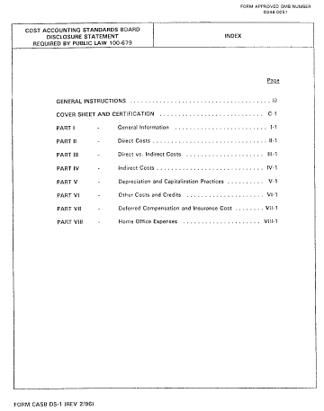
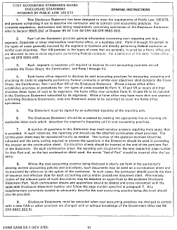
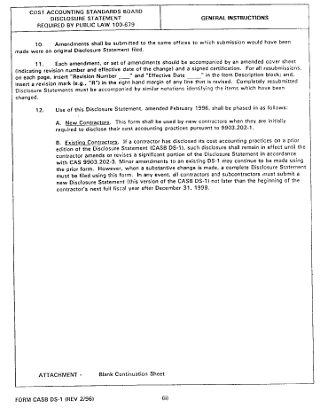
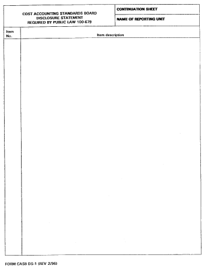
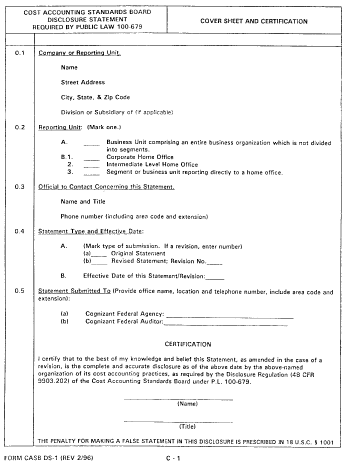
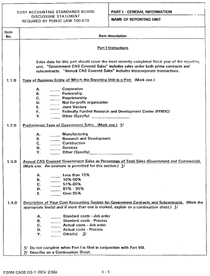
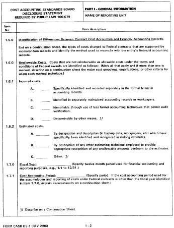
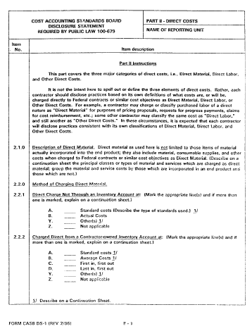
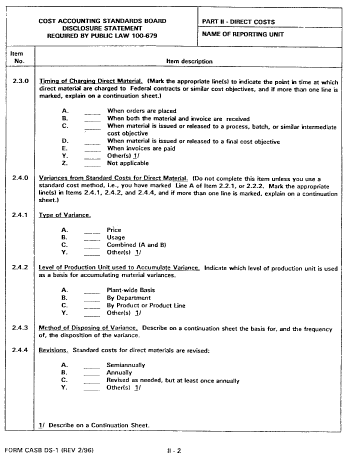
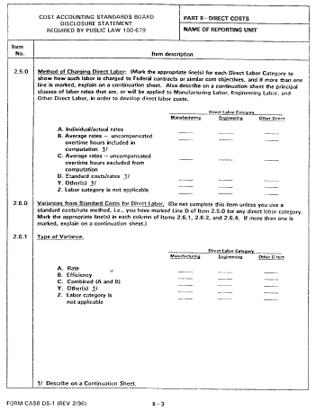
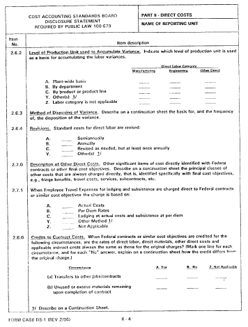
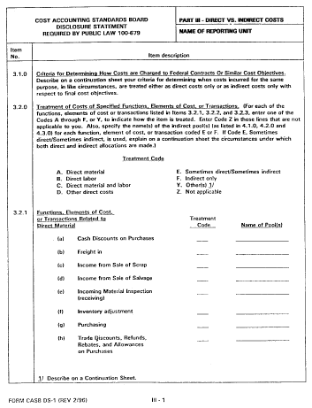
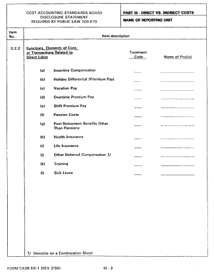
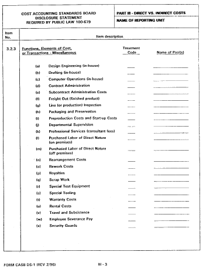
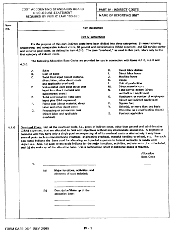
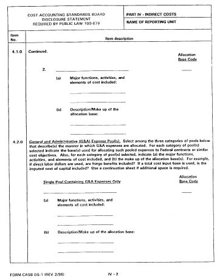
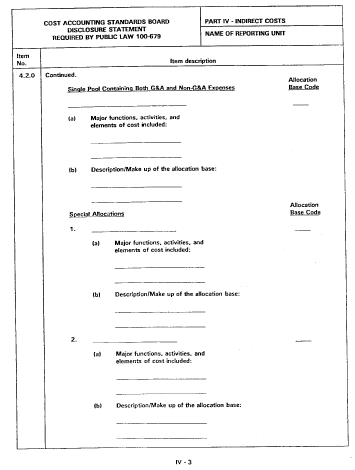
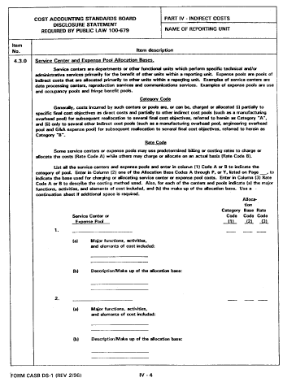
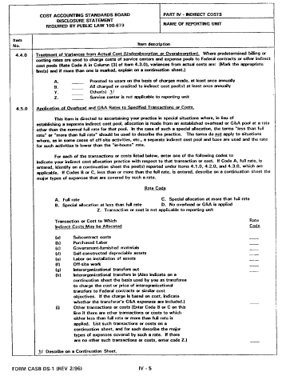
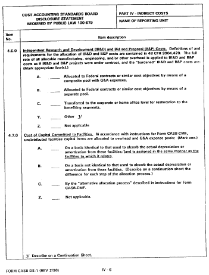
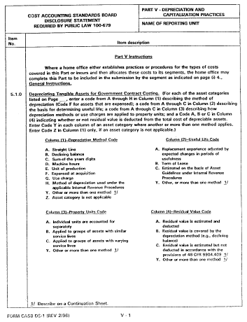
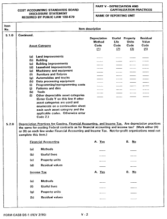
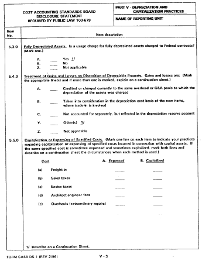
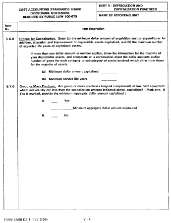
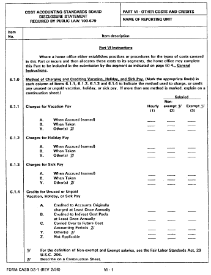
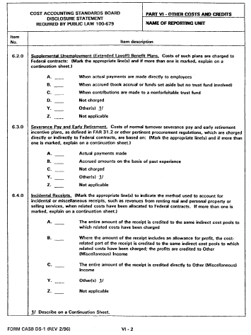
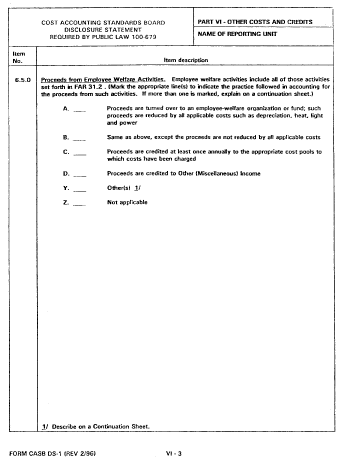
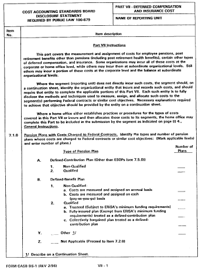
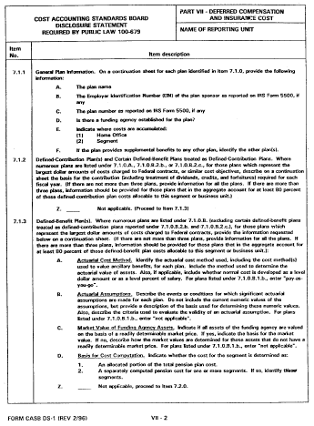
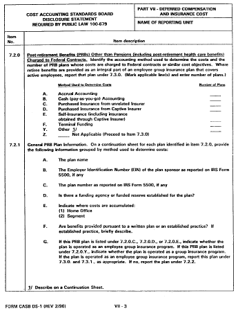
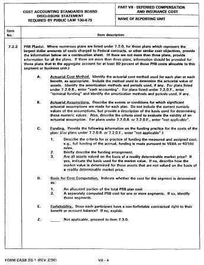
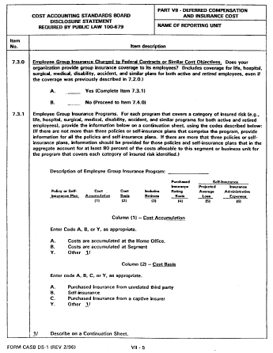
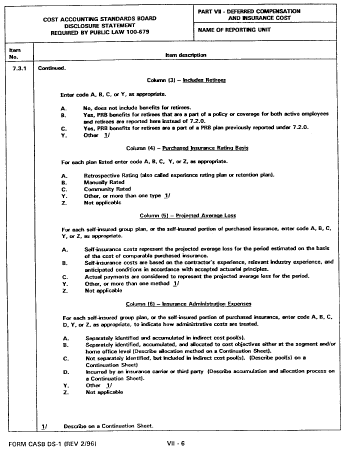
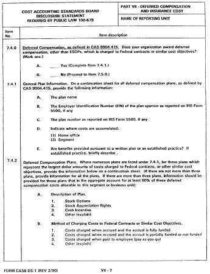
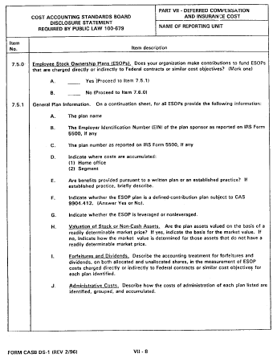
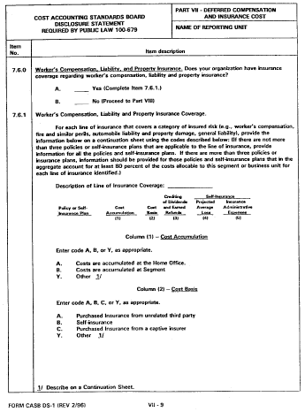
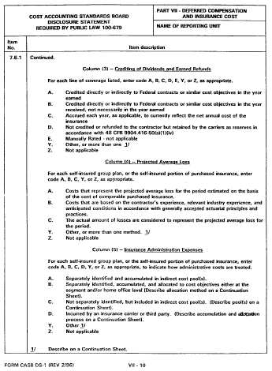
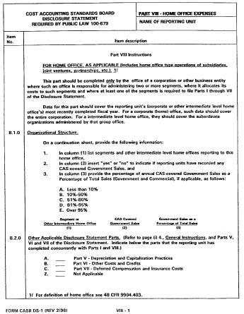
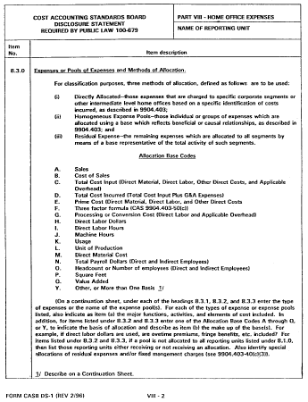
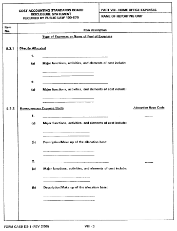
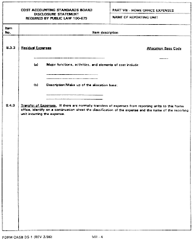
[61 FR 7621, Feb. 28, 1996]